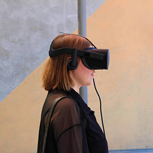

October 19-22, 2017
Brooklyn, NY
Shira Feldman

Hi! My name is Shira Feldman; I'm a recent NYU graduate having concentrated in critical internet theory and new media art. My interests lay particularly in the design and ethics of networks, as they manifest both technically and conceptually. This past year I wrote a thesis on "post internet" artworks, following the claim, "the internet does not exist" from an e-flux journal published in 2015. You can find my work online at www.shira-feldman.net, and some thoughts & memes on Twitter, @shirarbira.
Exhibiting with Anna Bialas
The Internet Is __
//How do we talk about and give shape to a concept of "the internet" -- a word that describes both everything and nothing at the same time?
//How do we discuss the here and the now of the all-out internet condition?
This installation piece seeks to collect a kind of cultural vocabulary concerning what the internet is -- leveraging "the internet" to help define itself. Using the Twitter API and a Python script, the piece scrapes and collects tweets across the social media platform containing the text, "the internet is," storing the results in a MySQL database every 15 minutes. These results are then dynamically projected as a video; coded in Processing, it rapidly loops through thousands of tweets, ultimately rendering the phrase undefinable, volatile, and ineffable: both everything and nothing at the same time. The installation is imagined to be participatory and performative: soliciting viewers to submit a tweet with the potential for it to appear within the projection. As a digital installation piece, the video functions beyond a creative experience--as both a site and method of data collection. Moving forward, I hope to take the data gathered through the site-specific installation to use in various Natural Language Processing experiments, leveraging algorithms to understand the ways in which people relate to and conceptualize the internet.